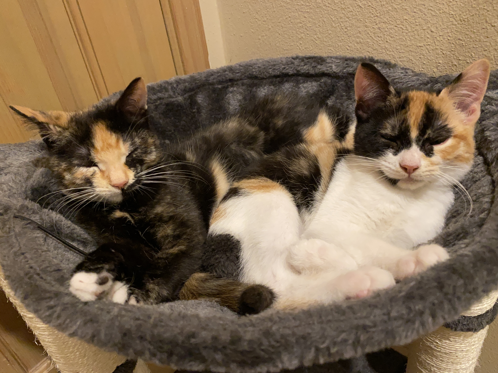

Hey there, my name is Grayson Giles and I’m from Seattle while currently living in Mukilteo. I am currently working towards a general CIS ATA degree at Edmonds College with the intention to transfer to a four year to pursue a bachelors in computer science. I am taking web development (like I assume many of you visiting are as well) to get an understanding of what goes into web development to see if I would like to pursue a career in web development further. I am currently going to EDCC mainly because its cheaper to do two years here and then transfer later. I have a good amount of experience coding and I’ve taken multiple courses in cybersecurity and database management.
I also have two cats named Pepper and Layla, they are sisters and are each a year old. They're both incredibly friendly towards people due to the fact that their mother died before their eyes opened so they've only ever been raised by people. I struggled to find a picture of myself to put on this website because the majority of the pictures I've taken are of Pepper and Layla or of my girlfriend. The picture above is probably my favorite picture of the two.
I had a lot of fun building this website and I hope you enjoy your stay here, however brief it may be. Getting some of the elements in the pages to work together was a lot of trial and error but it all came together in the end. Feel free to check out some of the other pages by clicking on any button at the top of the page. Oh, and one more thing.
Thanks for visiting!